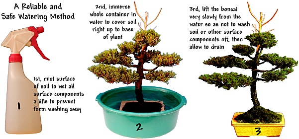
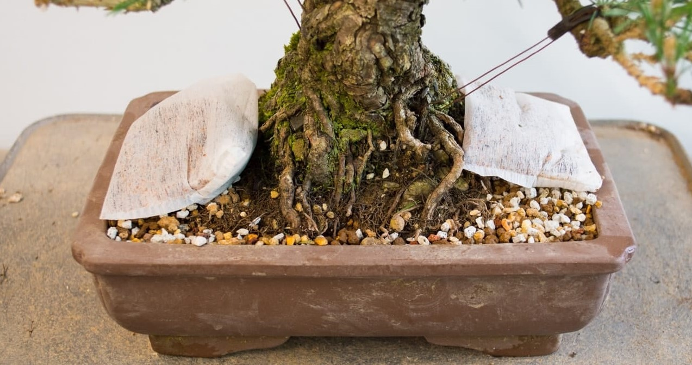
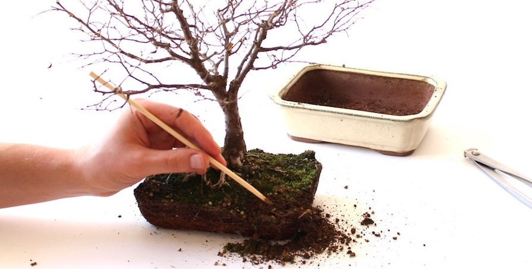

Watering
The watering of your bonsai must never be neglected. Apply water when the soil appears dry --
never allow the soil to become completely dry. If your bonsai is receiving full sun, it may be necessary to
water once a day. This schedule may vary with the size pot, type of soil and type of bonsai tree you own.
Evaluate each tree's water requirements and adjust your watering schedule to accommodate it. It is a good idea
to use a moisture meter until you get to know the requirements of your bonsai tree. Watering should be done with
a watering can or hose attachment which should dispense the water in a soft enough manner as not to disturb
the soil. Water should be applied until it begins running out of the holes in the bottom of your pot. A good
rain is usually a sufficient watering.

Fertilizing
Fertilizing is also necessary if your bonsai is to remain healthy and beautiful. Since
your bonsai is growing in such a small amount of soil it is necessary to replenish the soil's supply of
nutrients periodically. Any general-purpose liquid fertilizer will do fine and is available at most
garden centers. We suggest that fertilizers be used at half their recommended strength. Fertilizer should
be applied at least once a month except during winter. Your bonsai will also respond well to foliar feeding,
with a water-soluble fertilizer applied every other month as a spray.

Repotting
Repotting must be performed periodically on all bonsai when their root system has filled the
pot. The reasons for repotting are to supply your tree with fresh soil, and to encourage a more compact root
system. As a rule, most deciduous trees require repotting every two or three years, while evergreens only need
to be repotted every four or five years. Since trees grow at different rates, this schedule will not always
hold true, therefore, you should examine your tree's root system each year to determine if it has become pot-bound.

Read more.